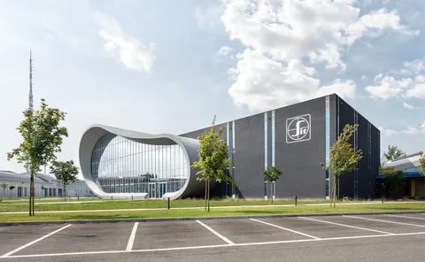
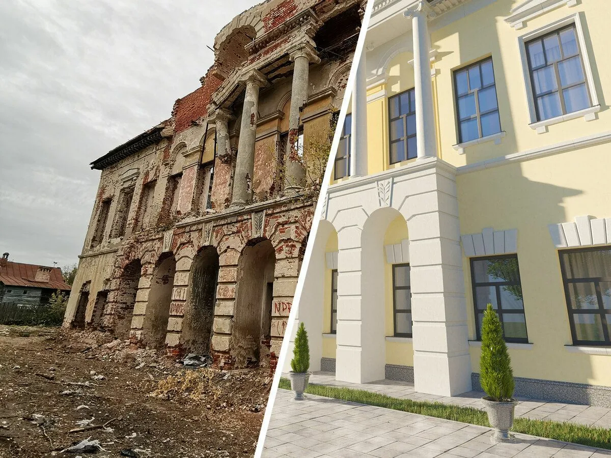

Статьи

12 июня 2026
Тренды 2026: биоклиматическая архитектура
Биоклиматическая архитектура стала обязательным стандартом для девелоперов. Три ключевых направления меняют подход к проектированию. Пассивное охлаждение — правильная ориентация здания, солнцезащитные ламели и тепловая инерция бетона снижают нагрузку на кондиционирование на 30–40%. Зелёные фасады — растения поглощают CO₂, снижают нагрев стен на 5–8°C и гасят до 10 децибел городского шума. Природная вентиляция — атриумы и двойные фасады позволяют зданию дышать, снижая энергопотребление и улучшая качество воздуха. Вывод: биоклиматический подход — это инвестиция в комфорт и снижение эксплуатационных расходов.

28 мая 2026
BIM на стройке: кейс ЖК «Северная звезда»
ЖК «Северная звезда» — 48 000 м², 24 этажа, 486 квартир. Проект вели в Revit с детализацией LOD 400. Цифровая модель выявила 247 коллизий инженерных систем с конструкциями ещё до выхода на площадку — каждая могла обернуться простоем и лишними расходами. Мы устранили всё на этапе проектирования. 4D-планирование позволило привязать модель к графику стройки: прораб видел на планшете объём работ на сегодня и расположение бригад через неделю. Срок монолита сократился на 18%. Спецификации материалов генерировались из модели автоматически, смета сошлась с точностью до 2%. Итог: объект сдан на два месяца раньше срока.

10 апреля 2026
Реновация vs Реставрация: работа с наследием
Клубный дом «Тихая гавань» находится в историческом квартале XIX века. Задача: вписать современное здание в охранную зону без имитации старины. Мы отказались от прямого цитирования фасадов. Использовали кирпич ручной формовки — тот же материал, что и два века назад, но с современной геометрией проёмов. Высота карниза совпадает с соседними зданиями — дом встроился в уличный фронт органично. Во дворе сохранили четыре липы старше ста лет, фундамент обошёл корни, дренаж защитил от подтопления. Проект прошёл три раунда в Департаменте культурного наследия и получил премию «Архнаследие» за 2023 год.